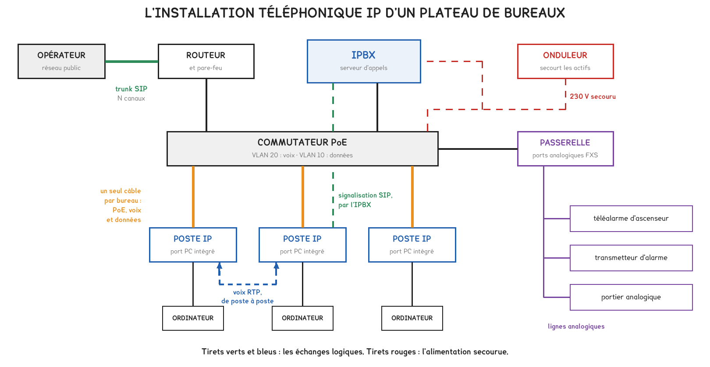
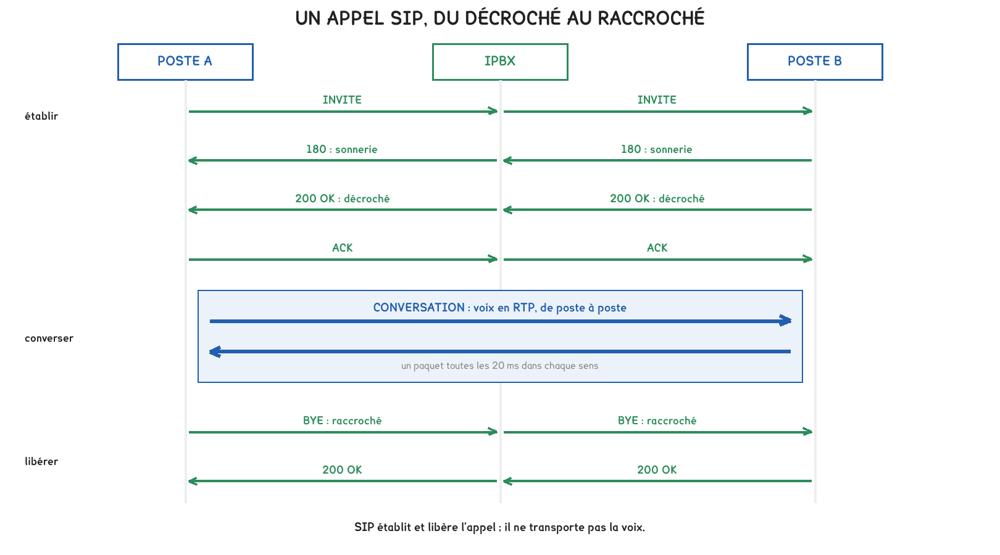
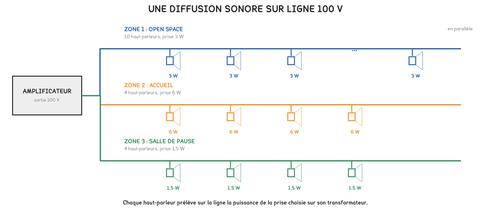
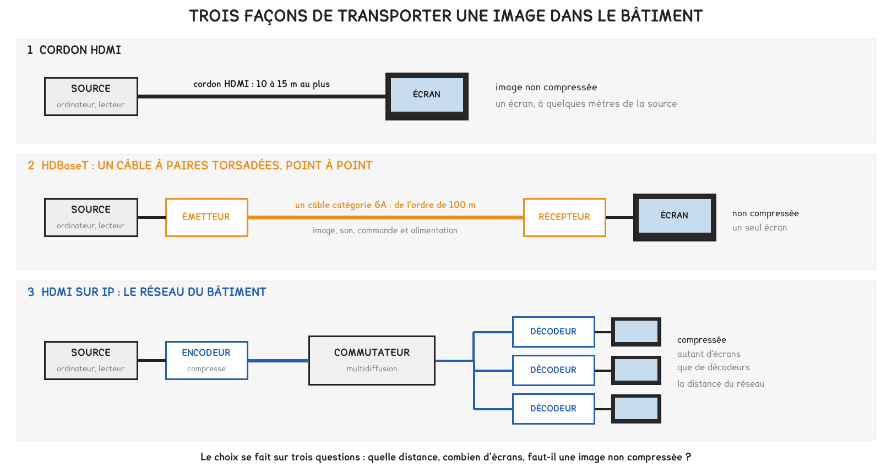

BTS FED option C · 1re année
La voix et l'imagesur le réseau du bâtiment
Le téléphone est devenu un équipement du réseau, alimenté par le câble. La séance a établi ce qu'un appel coûte en débit, ce qu'il exige pour rester audible, et comment le son et l'image empruntent la même infrastructure.
1 outil · 6 questions · 4 exercices · 4 replis · 6 figures
Savoirs travaillés
Objectifs de la séance
Une entreprise remplace son autocommutateur et ses postes analogiques par un IPBX, des postes IP alimentés par le réseau et un raccordement à l’opérateur par trunk SIP. La séance a suivi ce projet, puis la diffusion du son et de l’image dans le même immeuble.

Le téléphone devient un équipement du réseau
L’IPBX est un serveur d’appels : il enregistre les postes, établit et libère les appels, gère renvois et messagerie. Le trunk SIP le raccorde à l’opérateur avec un nombre fixé de canaux simultanés.
Chaque poste IP est alimenté par le commutateur PoE. Le commutateur réserve à chaque port la puissance de la classe de l’équipement, et la somme ne doit pas dépasser son budget PoE.
Un poste analogique était alimenté par la ligne, et fonctionnait pendant une coupure de courant. Un poste IP s’arrête avec son commutateur : commutateur, IPBX et routeur doivent être secourus par un onduleur.
Pour aller plus loin
Les équipements du bâtiment qui attendent une ligne analogiquePour aller plus loin›
La téléalarme d’un ascenseur, un transmetteur d’alarme ou un ancien portier attendent une ligne analogique. Une passerelle leur en fournit une, raccordée à l’IPBX.
Ces équipements portent souvent une fonction de sécurité : leur raccordement et leur secours se vérifient avant la mise en service, et non après.
Un appel, de la sonnerie au raccroché

Le protocole SIP établit l’appel, puis le libère. Il ne transporte pas la voix : pendant la conversation, la voix circule en paquets RTP, directement d’un poste à l’autre dans le bâtiment.
Ce que pèse un appel

Débit sur le câble = taille de la trame × 8 × paquets par seconde
- voix par paquet: débit du codec × durée du paquet ÷ 8, en octets
- taille de la trame: voix + 40 octets d’en-têtes IP, UDP, RTP + 18 octets Ethernet
- paquets par seconde: 1 ÷ durée du paquet
Le débit se compte dans chaque sens de la conversation.
64 kbit/s est le débit de la voix, pas celui de l’appel. Les en-têtes s’ajoutent à chaque paquet, quel que soit le codec : le débit réel sur le câble est toujours supérieur à celui du codec.
Pour aller plus loin
Pourquoi 8 000 échantillons par secondePour aller plus loin›
La voix téléphonique est limitée à 3 400 Hz. Pour restituer un signal, il faut l’échantillonner au moins deux fois plus vite que sa plus haute fréquence : 8 000 échantillons par seconde satisfont cette condition avec une marge.
Chaque échantillon est codé sur 8 bits en G.711. Le codec G.722, dit HD, restitue une bande plus large ; le G.729 compresse la voix pour les liens à faible débit.
Rester audible
La voix supporte mal trois défauts, bien plus que le manque de débit.
| Grandeur | Ce qu’elle mesure | Valeur usuelle à respecter |
|---|---|---|
| Délai | le temps de bout en bout, dans un sens | 150 ms au plus |
| Gigue | la variation de ce délai | 30 ms au plus |
| Pertes | les paquets qui n’arrivent pas | 1 % au plus |
La voix circule dans un VLAN séparé des données, avec une priorité dans chaque commutateur du trajet. Le poste et l’ordinateur partagent la même prise et le même câble, mais pas le même réseau logique.
Pour aller plus loin
Des couches, comme pour les protocoles du bâtimentPour aller plus loin›
Une trame de voix empile des en-têtes : Ethernet, puis IP, UDP et RTP, puis la voix. Chaque couche ajoute ce dont elle a besoin. Les protocoles du bâtiment suivent le même principe, et BACnet/IP circule lui aussi sur UDP, sur le même réseau que la téléphonie.
La séance suivante reprend ce schéma avec les protocoles métier.
Le son et l’image

En tertiaire, les haut-parleurs sont raccordés en parallèle sur une ligne 100 V. La prise choisie sur le transformateur de chacun fixe la puissance qu’il prélève. L’amplificateur se choisit sur la somme des prises, augmentée d’une réserve.
Z = U² / P
- U: tension de la ligne, 100 V
- P: puissance totale prélevée, en watts
- Z: impédance de la ligne chargée, en ohms
Chaque haut-parleur ajouté en parallèle fait baisser l’impédance de la ligne.

Une image non compressée dépasse de loin le débit d’un réseau local. Elle se transporte par cordon sur quelques mètres, en HDBaseT sur un câble dédié d’une centaine de mètres, ou compressée sur le réseau IP, qui la distribue à autant d’écrans que nécessaire.
Pour aller plus loin
La télévision dans le logementPour aller plus loin›
Dans un logement câblé en grade 2TV ou 3TV, la télévision reçue par l’antenne circule sur une paire du câblage de communication. Elle est affectée à une prise par un cordon placé dans le tableau de communication.
La télévision proposée par la box circule, elle, sur le réseau de données : elle emprunte une prise affectée aux données et dépend de l’accès internet.
Essayer
Vérifier que c’est acquis
- Le serveur d’appels d’une installation IP est : l’IPBX | le routeur | la passerelle
- Pendant la conversation, la voix circule : d’un poste à l’autre | toujours par l’IPBX
- Le codec G.711 produit : 64 kbit/s de voix | 8 kbit/s de voix | 87,2 kbit/s de voix
- La gigue est : la variation du délai | la perte de paquets | le débit de la voix
- HDBaseT transporte l’image sur : un câble à paires torsadées dédié | le réseau IP | une liaison radio
- Ajouter des haut-parleurs sur une ligne 100 V fait : baisser son impédance | monter son impédance
S’entraîner
Exercice · D2-3
Des paquets de 30 ms
Un IPBX envoie la voix en G.711 par paquets de 30 ms. Les en-têtes IP, UDP et RTP font 40 octets, l’en-tête et la fin de trame Ethernet 18 octets.
Quel est le débit sur le câble, dans un sens ?
Exercice · D2-3
Le budget d’un commutateur
Un commutateur alimente 24 postes IP de classe 2, à 7,0 W réservés par port, et 3 bornes Wi-Fi de classe 4, à 30 W réservés par port.
Quelle puissance PoE le commutateur doit-il réserver au total ?
Exercice · D2-3
Établir l’appel
Quel protocole établit puis libère un appel entre deux postes IP, sans transporter la voix ?
Exercice · B8-2
En parallèle, pas en série
Un installateur propose de raccorder en série les haut-parleurs d’une diffusion sur ligne 100 V. Expliquer en trois ou quatre lignes pourquoi ils se raccordent en parallèle.
- J’ai indiqué qu’en parallèle, chaque haut-parleur reçoit la tension de la ligne
- J’ai expliqué qu’en série, la tension se partage entre les haut-parleurs
- J’ai signalé qu’un haut-parleur coupé interromprait toute une ligne en série
- J’ai relié la puissance de chacun à la prise de son transformateur
À retenir pour la prochaine séance
La séance suivante traite les protocoles métier du bâtiment et la façon de faire dialoguer deux systèmes. Elle reprend le principe des couches et le calcul d’un débit à partir d’une trame. Elle comporte aussi le premier devoir surveillé, sur les séances des semaines 4 à 9.
Cette page rappelle la séance. Elle ne remplace pas le polycopié et ne donne aucun corrigé. Tous les calculs se font dans votre navigateur ; rien n'est enregistré.